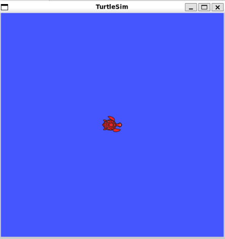
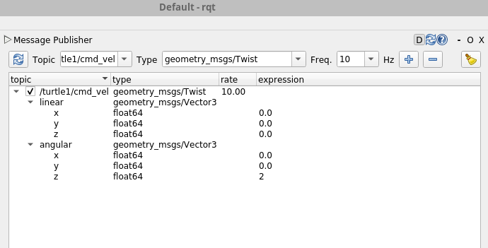
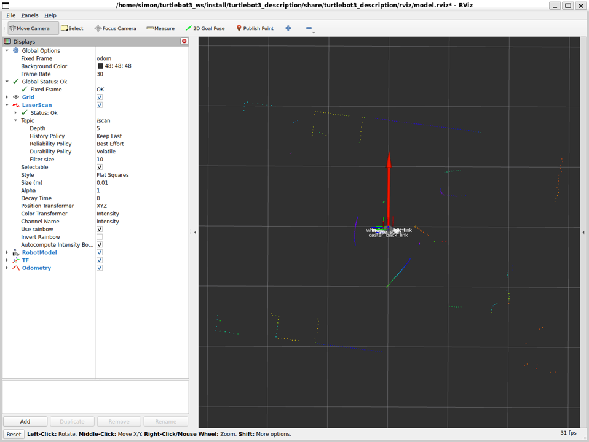
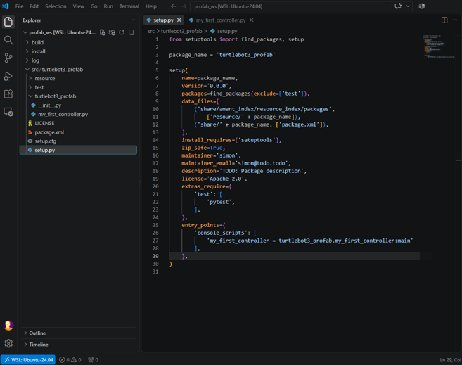
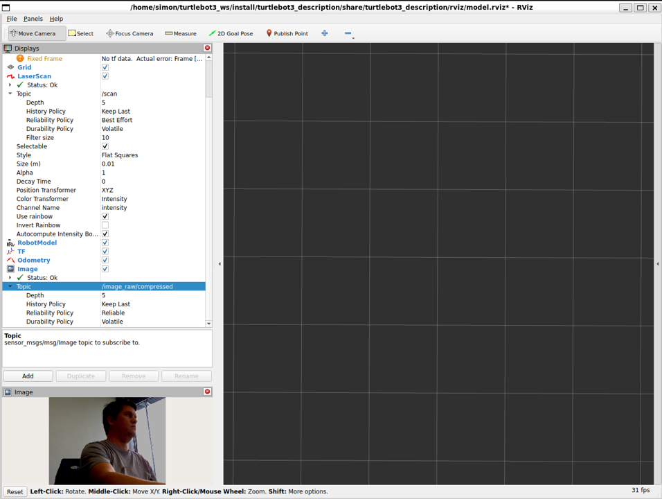

Introduction to ROS2 and Turtlebot3
Human-IST, ProtoFab, LearningLab, UniFR
ProtoFab Assignment 2: Introduction to ROS2 and Turtlebot3
Introduction
This practical work focuses on learning the basic concepts of ROS through small independent tasks. Each task consists of applying hands-on commands in the terminal to illustrate how ROS and Turtlebot3 work. Note that Task 4 is the only task of this assignment where you will have to develop code on your own!
In this practical work, you will perform the following tasks:
Task 1 – Explore ROS and Linux basic commands
Task 2 – Control the Turtlebot3 in the real world
Task 3 – Control the Turtlebot3 in simulation
Task 4 – Create your first controller (code on your own).
Task 5 – [Optional] Update Turtlebot3 Wifi settings
Task 6 – [Optional] Enable usb_camera and live-stream on the Turtlebot3
Learning objectives:
At the end of the assignment, you should be able to
Run basic commands
Use visualization tools (rqt_graph, rqt)
Create a package
Understand Nodes and Topics (creation, start, code, etc.)
Use the Turtlebot3 in simulation and real modes
Create a simple controller for the Turtlebot3
Pre-requesites
A working installation of ROS (ubuntu 24.04 + ROS jazzy) (see AN01)
Notions seen in the lecture LN02
Hints
When you create a new workspace, do not forget to source it and, ideally, also to add the source command to your ‘~/.bashrc’ file.
Do not forget to make your python scripts executables (using the command chmod +x)
If you are using Windows WSL2 and Ubuntu, folder and file creations can be done using Visual Studio Code Interface
- You can install code using the command “sudo snap install –classic code”. Or you can simply install the WSL plugin for your Windows VS Code to remotely handle files and folders in your WSL environment.
If you are using Windows WSL2 and Ubuntu, do not forget to disable your firewalls, otherwise ROS messages are blocked. Do not forget to re-enable them after the assignments.
Tasks
Task 1 – Explore ROS basic commands
Basic commands.
Linux basic commands.
List files in current directory
[localpc-terminal] lsChange to directory
[localpc-terminal] cd <dir_name>Remove directory and subdirectories (delete)
[localpc-terminal] rm -r <dir_name>Print working directory (path of current dir)
[localpc-terminal] pwdDisplay the content of a file in the terminal
[localpc-terminal] cat <filename>Open files in an editor. There are many different text editors available. We recommend using ‘code’ or ‘nano’ to view and edit files.
[localpc-terminal] code <filename>Print the value of a variable
[localpc-terminal] echo $ROS_DOMAIN_ID
Explore the turtlebot3 Gazebo package (Gazebo is the ROS simulator)
Find the location of turtlebot3_gazebo ros package and move to its directory (replace
with your username in the path below) [localpc-terminal] ros2 pkg prefix turtlebot3_gazebo [localpc-terminal] cd /home/simon/turtlebot3_ws/src/turtlebot3_simulations/turtlebot3_gazeboExplore its files and subdirectories (use cd, ls, cat and/or your preferred file editor).
Now find the turtlebot3_world.launch.py launcher file and read its content. This launcher file is a good “simple” example of launcher. It declares a few variables, launches gazebo simulation (server and client), launches robot_state_publishers that brigdges topic (to let you use /cmd_vel), launches the turtlebot3 robot in a specific location. Youz can see that first all the commands are declared and added to the list of actions at the end. Within a launcher file, it is possible to parameterize and start multiple other launchers and nodes. It is very useful within ROS2 ecosystem to make your life easier by starting multiple executables with a single command.
Now let’s start a simulation and explore how to visualize the available topics and their content.

Run a (single) node (simulation)
First install turtlesim package. Turtlesim is a basic package that is often used to introduce newcomers to ROS and robotics. You can find many examples and tutorials online.
[localpc-terminal] sudo apt install ros-jazzy-turtlesimList the available packages and check that turtlesim is installed
[localpc-terminal] ros2 pkg listList the available executables of the package turtlesim. You should see four executables: turtlesim draw_square, turtlesim mimic, turtlesim turtle_teleop_key, turtlesim turtlesim_node
[localpc-terminal] ros2 pkg executables turtlesimIn a first terminal, run turtlesim node from the turtlesim package
[localpc-terminal-1] ros2 run turtlesim turtlesim_nodeIn a second terminal, run turtle_teleop_key node from the turtlesim package. With focus on this terminal, you should now be able to move the turtle using the arrow keys on your keyboard.
[localpc-terminal-2] ros2 run turtlesim turtle_teleop_keyClose the teleop Node. (Hit q or ctrl-c in the terminal 2). Keep the other node running (terminal 1).
List available topics.
Hint: use ‘-h’ option to get some more information about a command (ie.ros2 -h,ros2 topic -h)[localpc-terminal-2] ros2 topic list /parameter_events /rosout /turtle1/cmd_vel /turtle1/color_sensor /turtle1/poseListen to a topic and output constantly its values.
Hint: useros2 topic echo --once /turtle1/poseto output once the values of the topic.[localpc-terminal-] ros2 topic echo /turtle1/pose x: 5.544444561004639 y: 5.544444561004639 theta: 0.0 linear_velocity: 0.0 angular_velocity: 0.0 --- ...List available services
[localpc-terminal-2] ros2 service list /clear /kill /reset /rosout/get_loggers /rosout/set_logger_level /spawn /turtle1/set_pen /turtle1/teleport_absolute /turtle1/teleport_relative /turtlesim/get_loggers /turtlesim/set_logger_levelGet information about a service. For example, the command below will give you information about the /reset service.
[localpc-terminal-2] ros2 service info /reset Type: std_srvs/srv/Empty Clients count: 0 Services count: 1Call a service (you must specify the Service and the Type). For example, using the command below will reset the turtle simulation.
[localpc-terminal-3] ros2 service call /reset std_srvs/srv/EmptyList existing nodes
[localpc-terminal-3] ros2 node list /turtlesim
Start and use visualization tools. Note: You should still have roscore and turtlesim_node running in distinct consoles.
Start rqt_graph to visualize nodes, topics and their connections. Select all Nodes/Topics (all). Start ‘turtle_teleop_key’ in a third terminal, if you want to see a more interesting graph (with connections). Close it when done.
[localpc-terminal-3] rqt_graphStart rqt to interact and visualize the topics and their data. To display topics, go to Plugins->Topics->TopicMonitor. You can select and unselect topics to monitor their values. You can use the different Plugins from the menu to plot graphs (visualization->plot). You can also publish data to topics (Topics->ssagePublisher). You can do many more things using the different plugins. Explore them for yourself.
[localpc-terminal-3] rqtNow try to move the turtle by publishing messages to the /turtle1/cmd_vel topic. Open the Plugins->Topics->MessagePublisher window, select the correct topic, use a rate of 1hz, click on the ‘+’ to create your new Publisher. Now choose values for linear (x value) and angular (z value) vectors. Enable the topic and observe your turtle move.

Task 2 – Control the Turtlebot3 in the real world
In this task, you will set up and control the real Turtlebot3 robot. To avoid ambiguity, in our command instructions, we use [localpc-terminal] and [turtelbot-terminal] to indicate whether we are referring to the terminal of your own machine or the terminal of the turtlebot (usually over sh). WARNING - Make sure the robot is in a safe area, don’t put it on a table. The robot will move and you don’t want it to fall or hit something. If I put it on the table, I typically put a small bot underneath it so the wheels do not touch the ground, preventing any movement
Disable your firewalls (Windows or WSL). On Windows, you must disable your firewalls, otherwise ROS messages are blocked. Go to your OS settings and disable firewalls for networks (at least for the ProFab network).
Connect to profab_wifi (ssid: ProFab, password: 1700_UniFR.&)
Set your ROS_DOMAIN_ID to your Turtlebot3 ID (ie. 101, 102, 103, 104, 105, etc). This is needed to allow your localpc and the robot to communicate with each other. You can set it in your bashrc file (see below) or directly in the terminal using the command below.
[localpc-terminal] export ROS_DOMAIN_ID=101Update your bashrc and add the lines shown below at the end of the file (only the one necessary, don’t duplicate).
[localpc-terminal] code ~/.bashrcHere are the lines I added to my bashrc file
# Added by SR to enable graphical library use for ROS. Not sure if still necessary anymore (added for safety). export LIBGL_ALWAYS_SOFTWARE=1 ## Added by SR (required export) export ROS_DOMAIN_ID=101 # ID on robot and pc must match to enable communication export TURTLEBOT3_MODEL=burger ## Added by SR (integration of ros jazzy commands within terminal) source /opt/ros/jazzy/setup.bash source ~/turtlebot3_ws/install/setup.bashSource your new bashrc to apply the changes. Source it on all open terminals.
[localpc-terminal] source ~/.bashrcTurn on the robot. It is already configured to connect automatically to ProFab wifi. If you want to use it on a different wifi, you will need to modify some files on the robot (see Task 5 for detailed instructions).
SSH into the robot (the IP must be the one of your turtlebot3). Each robot should have a label indicating its IP when using the ProFab wifi.
Note: Turtlebot3 OS - user: ubuntu, password: turtlebot. We will now refer to this ssh terminal by using [turtlebot-terminal] before indicating commands.[localpc-terminal] ssh ubuntu@192.168.1.101Update the robot bashrc (edit the file using nano editor). If necessary, update ROS_DOMAIN_ID variable in the .bashrc file with the value present on you local machine. Save, exit nano and then source your file.
[turtlebot-terminal] nano ~/.bashrc [turtlebot-terminal] source ~/.bashrcStart turtlebot3_robot node on the robot. This establishes the connection between the robot and ROS and brings up all necessary drivers.
[turtlebot-terminal] ros2 launch turtlebot3_bringup robot.launch.pyStart teleop on your local machine (open a new terminal if necessary)
[localpc-terminal-2] ros2 run turtlebot3_teleop teleop_keyboard
Now you should be able to move the robot using ‘awsdx’ keys on your keyboard (the focus must be on the terminal running teleop).
- When you are done playing with the robot, terminate all processes on the localpc (keep the real robot running with its node on)
Now let’s visualize the sensors of the robot on rviz in real-time
Launch rviz to visualize the robot and its sensors in real-time
[localpc-terminal-1] ros2 launch turtlebot3_bringup rviz2.launch.pyHints: If you do not see Lidar readings (the dots on the image below), do the following changes. In your terminal, type the command below before typing the roslaunch command. You may also want to add this command in your ‘~/.bashrc’ file to avoid retyping it every time you launch a new terminal.
$ export LIBGL_ALWAYS_SOFTWARE=1
Rviz interface displaying the robot and the lidar data. The Lidar scan data are represented with the dots. Do not hesitate to play a bit with the robot and its sensors. You can move the robot using teleop, visualize the Lidar data, etc. You can also use rqt to visualize topics and their data. Once finished, terminate all processes on your local machine and turn off the robot.
Task 3 – Control the Turtlebot3 in simulation
Start the gazebo simulation for the turtlebot3
[localpc-terminal1] ros2 launch turtlebot3_gazebo turtlebot3_world.launch.pyStart teleop node and move the robot (using awsdx keys)
[localpc-terminal2] ros2 run turtlebot3_teleop teleop_keyboardStop teleop (Hit ctrl-c in the terminal)
Start rqt and send Twist commands to the right topic to make the robot move
[localpc-terminal1] rqt
Note that when you stop sending commands, the robots does not stop moving. You must send a linear(0,0,0), angular(0,0,0) Twist command to stop it. You can also use the teleop node to stop it.
Task 4 - Create a controller for the Turtlebot3
In this task, you will create your first package and then develop the code for a simple collision avoidance controller for the Turtelbot3. You will test it in the simulated environment. Finally, you will create a launch file to start your controller and the simulated world. Note: the developed controller will be tested in simulation but it could also be used to control the real turtlebot3 without any modification.
Create a package
(see https://docs.ros.org/en/jazzy/Tutorials/Beginner-Client-Libraries/Creating-Your-First-ROS2-Package.html)
Create a directory for your workspace (if you have not done it yet) and a ‘src’ subdirectory. You can name your workspace as you prefer, here we will use profab_ws.
[localpc-terminal] mkdir -p ~/profab_ws/src[localpc-terminal] cd ~/profab_ws/src/Create the new package using the ros2 pkg create command. The command below creates a new package named turtlebot3_profab, which depends on std_messages, turtlebot3_msgs, sensor_msgs, geometry_msgs and rclpy. This will create a turtlebot3_profab folder which contains the package.xml and the CMakeLists.txt files, which have been partially filled out with the information you gave.
[localpc-terminal] ros2 pkg create turtlebot3_profab --build-type ament_python --license Apache-2.0 --dependencies std_msgs turtlebot3_msgs sensor_msgs geometry_msgs rclpyNote: if you need to add external dependencies such as msgs and/or packages afterward, you need to modify these two files and rebuild the package with ‘colcon build’.
Now you must build packages in your workspace (which will also build your package). Go back to the root of your workspace and (re)build it
[localpc-terminal] cd ~/profab_ws/[localpc-terminal] colcon build Starting >>> turtlebot3_profab Finished <<< turtlebot3_profab [1.07s] Summary: 1 package finished [1.26s]Note: after the workspace has been built, it has created a standardized directory structure (src, build, install, log). You may want to have a quick look at the content of the different directories.
Source your workspace, so you make sure you can use/call its packages and executables from your terminals. You may actually add this source to your bashrc to make sure it is automatically loaded in all new terminals.
[localpc-terminal] source ~/profab_ws/install/setup.bash[localpc-terminal] echo 'source ~/profab_ws/install/setup.bash' >> ~/.bashrc [localpc-terminal] source ~/.bashrc
Create and run your first controller node
Now let’s start creating our first controller node.
Start a terminal and type the following commands:
Change directory to your newly created package
[localpc-terminal] cd ~/profab_ws/src/turtlebot3_profabChange directory to the ‘turtlebot3_profab’ folder (~/profab_ws/src/turtlebot3_profab/turtlebot3_profab)
[localpc-terminal] cd turtlebot3_profabCreate a new file for your ‘controller’ node with the ‘touch’ command and make it executable with the chmod command
Info: If want to know more about a command, you can always use its –help option (see below).[localpc-terminal] touch --help[localpc-terminal] touch my_first_controller.py[localpc-terminal] chmod +x my_first_controller.pyStart coding with your favorite IDE (using Visual Studio Code here)
[localpc-terminal] code my_first_controller.pyUse the partial source code below for your script (you can copy-paste) First have a look at the code to understand its structure. It is a typical structure for the code of a node.
- Look at the run() function. When does the controller stops ?
- Look at the initialisation of the two different topics (publisher, subscriber). What do their parameters correspond to ?
- Look and understand the scan_callback() function. What is the current moving logic ? What will be the behaviour of the robot ?
- Look at the clean shutdown logic. What should you do here to prevent problems ?
- Test compiling and running the script before modifying it (see steps 9, 10 and 11 below) .
Edit your setup.py file to include your new script in the ‘entry_points’ section. This is needed to make your script executable.
[localpc-terminal] cd setup.py [localpc-terminal] code setup.pyNote: I like to open directly the whole workspace in Visual Studio Code, so I can easily navigate between files and folders. You can do it by typing the command below in your terminal (or by opening VS Code and selecting the folder of your workspace).
[localpc-terminal] ~/profab_ws [localpc-terminal] code .
Screenshot of Visual Studio Code with package folder hierarchy and setup.py file open with the entry_points section Go back to the root directory of your workspace and (re)build it
[localpc-terminal] cd ~/profab_ws/[localpc-terminal] colcon buildNow start your node
Hint: Use two distinct terminals: start your turtlebot3 simulation in the first terminal and your controller node in the second terminal.[localpc-terminal] ros2 launch turtlebot3_gazebo turtlebot3_world.launch.py[localpc-terminal] ros2 run turtlebot3_profab my_first_controllerTerminate both nodes using “ctrl-c” from their respective terminal
Modify the controller to include a collision avoidance logic
Now reopen the ‘my_first_controller.py’ and modify it according to the provided comments so that the robot moves forward and avoid obstacles. Most of the necessary changes that must be made are located in the scan_callback() and control_loop() functions (see all TODOs). The expected new behaviour is to avoid obstacles in front of the robot to avoid collisions. One possible solution is the following: if front_scans are below a defined threshold, stop moving forward and rotate left or right (depending on left or right scans). Otherwise, move straight. Of course, you may code a more complex logic; do not hesitate to play with this controller once you have a first working solution. (You need to rebuild the package after modifying the code, see step 10 above).
Restart Gazebo and your controller node to test your new logic. You should see the robot moving forward and avoiding obstacles.
Hint: Use two distinct terminals: start your turtlebot3 simulation in a terminal and your controller node in the other terminal.
#!/usr/bin/env python3
##
## Exercise
## You need to fill the TODO parts to implement your logic
##
## LIDAR INFORMATION
# Contrary to simulation, real robot does not receive exactly 360 measures every scan (more or less around 270). Therefore it is necessary to know where it started its scan, the angle between two measures (provided by the robot /scan topic). We can use this information to convert that to 0 - 360 information in order to facilitate processing. The lambda function below helps doing that. In the end, the user receives two arrays of same lengths. The first array contains the angles and the second array contains the distances. (0 degree is ahead, 90 is left, 180 is behind and 270 is right)
# More information on how to process lidar data https://stanbaek.github.io/ece387/Module8_LIDAR/LIDAR.html
import rclpy
from rclpy.node import Node
import signal
from rclpy.signals import SignalHandlerOptions
from rclpy.qos import qos_profile_default, qos_profile_sensor_data
from geometry_msgs.msg import TwistStamped
from sensor_msgs.msg import LaserScan
from time import sleep
import math
# lambda function to convert rad to deg
RAD2DEG = lambda x: ((x)*180./math.pi)
# The main class that extends the Node class of ROS2. It contains all the necessary functions to implement a simple collision avoidance controller for the Turtlebot3 robot.
# Subscribe to the /scan topic to get LIDAR data and publish to the /cmd_vel topic to send velocity commands to the robot.
class CollisionAvoidance(Node):
def __init__(self):
super().__init__('collision_avoidance_controller')
self.get_logger().info("Collision avoidance controller has started")
# Publisher to send velocity commands
self.cmd_vel_pub = self.create_publisher(TwistStamped, '/cmd_vel', 10)
# Subscriber to get LIDAR scans
self.scan_sub = self.create_subscription(LaserScan, '/scan', self.scan_callback, 10)
# TODO - Define a good value for your safety distance threshold in meters (Minimum distance to consider an obstacle (in meters)).
# TODO - You will use this value in your control loop logic to decide whether to move forward or rotate to avoid obstacles. You can test different values to see how it affects the robot's behaviour.
self.min_dist = 0 # Minimum distance to consider an obstacle (in meters)
self.get_logger().info(f"Collision avoidance controller initialized with min_dist = {self.min_dist}")
self.front_dist = float('inf') # Initialize front distance to infinity
self.left_dist = float('inf') # Initialize left distance to infinity
self.right_dist = float('inf') # Initialize right distance to infinity
# Main loop rate
self.ctrl_loop_timer = self.create_timer(0.1, self.control_loop) # 10 Hz
# Callback function to process LIDAR scan data
# This function will be called whenever a new scan message is received
# It processes the scan data to determine if there are obstacles in the way
# and sets the appropriate movement commands for the robot
def scan_callback(self, scan_data):
degrees = []
ranges = []
# Arrays with detected distances for each considered directions
front = []
left = []
right = []
# Determine how many scans were taken during rotation
count = len(scan_data.ranges)
for i in range(count):
# Using scan_data.angle_min and scan_data.angle_increment data to determine current angle,
# Also convert radian to degrees (0 degree is ahead, 90 is left, 180 is behind and 270 is right)
degrees.append(int(RAD2DEG(scan_data.angle_min + scan_data.angle_increment*i)))
# Append the distance detected to the array of distances
rng = scan_data.ranges[i]
# Ensure range values are valid; set to 0 if not
if rng < scan_data.range_min or rng > scan_data.range_max:
ranges.append(0.0)
else:
ranges.append(rng)
# python way to iterate two lists at once!
for deg, rng in zip(degrees, ranges):
# if the range is not 0, append to the appropriate list
if rng > 0:
if (deg >= 340 or deg <= 20):
front.append(rng)
elif 30 <= deg <= 60:
left.append(rng)
elif 300 <= deg <= 330:
right.append(rng)
# TODO - Find minimum distances for each considered direction (use front, left and right arrays computed above)
self.front_dist = -1
self.left_dist = -1
self.right_dist = -1
self.get_logger().info(f"Front distance: {self.front_dist}, Left distance: {self.left_dist}, Right distance: {self.right_dist}")
# Control logic to determine the robot's movement based on the distances measured by the LIDAR
# This function is called at a regular interval (10 Hz) to continuously evaluate the situation and send movement commands
# The regular interval has been defined in the __init__ function using self.ctrl_loop_timer = self.create_timer(0.01, self.control_loop) # 10 Hz
def control_loop(self):
# Initialise a new TwistStamped message to send velocity commands to the robot
twist_msg = TwistStamped()
# TODO - Code a safe decision logic for the motion. Currently it just blindly moves forward.
# TODO - Hint: Use the LIDAR values processed above (self.front_dist, self.left_dist, self.right_dist). Choose to rotate left or right if something is detected ahead, below the defined safety_threshold, otherwise move straight forward.
# TODO - Note. You can do more or less complex logics, but the goal is to avoid collisions without getting blocked. Start with something simple and then complexify if you like.
# Modify the Twist message to send a move forward to the robot
twist_msg.twist.linear.x = 0.1
twist_msg.twist.angular.z = 0.0
self.cmd_vel_pub.publish(twist_msg)
# Send a stop command to the robot
def stop_robot(self):
# Stop the robot if the node is shut down
stop_msg = TwistStamped()
stop_msg.twist.linear.x = 0.0
stop_msg.twist.angular.z = 0.0
self.cmd_vel_pub.publish(stop_msg)
self.get_logger().info("Robot STOP command sent")
#Main functions that gets called on startup
def main(args=None):
#Init rclpy (make sure we handle termination ourself with the signal handler NO option)
rclpy.init(args=args, signal_handler_options=SignalHandlerOptions.NO)
# Initialise the collisiaon avoidance controller
controller = CollisionAvoidance()
# Make sure we stop the robot when the system is terminated (ctrl-c) or crashed
# Otherwise the robot would continue moving (Dangerous)
def signal_handler(signum, frame):
controller.stop_robot()
rclpy.shutdown()
signal.signal(signal.SIGINT, signal_handler) # Ctrl-C
signal.signal(signal.SIGTERM, signal_handler) # kill / launcher shutdown
try:
# Start the controller and listen to callbacks forever (until termination)
rclpy.spin(controller)
finally:
# Finally destroy the node
controller.destroy_node()
if __name__ == "__main__":
main()Some more details about portions of the code above:
Shebang (
#!/usr/bin/env python3): every Python ROS node will have this declaration at the top. This first line makes sure your script is executed as a Python script.Imports: imports the necessary packages
def main(args=None): entry point of the application (Node). When you run the node, it enters here. Note the few specific lines of code that enable handling the shutdown of the node gracefully (init option, and signals handlers).
Main CollisionAvoidance class :
def init(self): define potential variables, initialize ros node and connect to topics (pub and sub).
The line
super().__init__('collision_avoidance_controller')is important as it tells ‘ROS’ the name of your node; until ROS has this information, it cannot start communicating with other nodes. NOTE: the name must be a base name, i.e. it cannot contain any slashes “/” or other special characters.The line
self.ctrl_loop_timer = self.create_timer(0.1, self.control_loop)defines the main loop rate: this sets how often the loop will run, in this case, 10 times per second. It allows publishing movement commands at a regular interval. With a frenquency of 10, we should expect to go through the loop 10 times per second (as long as our processing time does not exceed 1/10th of a second!)Note the subscription to the LIDAR scan topic that triggers a callback function. The callback function is called upon reception of every new message on the topic. Its goal is then to handle the received data as you can see in the content of the
def scan_callback(self, scan_data)defined function.def control_loop(self): is the control logic, it is called 10 times per second (as defined by the timer) and send movement commands to the robot.
def stop_robot(self): this function is called upon shut down (i.e. when the user hits ctrl-c or closes the console) and ensures a clean/safe shutdown, for example by sending commands to stop the motors of the robot.
Create a launcher
Starting multiple nodes in distinct terminals can be quite painful and boring. The goal of a launch script is to automate the launching of multiple nodes using a single command. You can find additional information about launch files using this link.
In a terminal and type the following commands:
Change directory to the root of your package directory of your package, create a ‘launch’ directory and a new ‘launch’ file in this new directory,
[localpc-terminal] cd ~/profab_ws/src/turtlebot3_profab/ [localpc-terminal] mkdir launch [localpc-terminal] cd launch [localpc-terminal] touch sim_collavoid.launch.xmlEdit the launch file to include start the gazebo simulation launcher and your node Note the ‘output=”screen”’ option that is needed in order to allow your node to output text on the console. Adding a delay is important to let gazebo start before sending commands to the Turtlebot.
<launch> <include file="$(find-pkg-share turtlebot3_gazebo)/launch/turtlebot3_world.launch.py"/> <timer period="10.0"> <node pkg="turtlebot3_profab" exec="my_first_controller" name="my_controller" output="screen"/> </timer> </launch>Now, you can launch the simulation and your controller node using a single command from the launch folder
[localpc-terminal] ros2 launch sim_collavoid.launch.xmlNow let’s make it accessible from the package. Modify the setup.py file (in the root of your package) to include the launch file. You need to add a couple of import and add an entry in the ‘data_files’ section. This is needed to make your launch file(s) accessible from the package. The setup.py file should look like the one below.
from setuptools import find_packages, setup
import os
from glob import glob
package_name = 'turtlebot3_profab'
setup(
name=package_name,
version='0.0.0',
packages=find_packages(exclude=['test']),
data_files=[
('share/ament_index/resource_index/packages',
['resource/' + package_name]),
('share/' + package_name, ['package.xml']),
('share/' + package_name + "/launch", glob(os.path.join('launch', '*launch.[pxy][yma]*'))),
],
install_requires=['setuptools'],
zip_safe=True,
maintainer='simon',
maintainer_email='simon@todo.todo',
description='TODO: Package description',
license='Apache-2.0',
extras_require={
'test': [
'pytest',
],
},
entry_points={
'console_scripts': [
'my_first_controller = turtlebot3_profab.my_first_controller:main'
],
},
)Change directory to the root of your workspace and (re)build it:
[localpc-terminal] cd ~/profab_ws/ [localpc-terminal] colcon buildNow you can start both nodes using this single laucher!
[localpc-terminal] ros2 launch turtlebot3_profab sim_collavoid.launch.xml
Congratulations, you have now created your first node and a basic launcher ! Note that launcher can be much more complex and manage parameters, redirect topics and many more that will not be covered within this course.
[Optional] Test your controller with the real robot
- Make sure you are connected to the same network with the robot (and have the same ROS_DOMAIN_ID) and that you firewall is disabled
- SSH onto the robot and start its bringup node
- Start your controller (using ros2 run, not the launcher) on your local pc
Your Turtlebot3 should now move and avoid obstacle, behaving similarly to the simulation. This is one the the beauty of ROS, allowing to switch from simulation to real robot easily. You may however observe that in a real environment, the developed controller is probably a bit too simple and does not allow to avoid all types of obstacles. Much more work would be needed to allow the robot to navigate in real complex environments.
Warning - When you hit CTRL-C, the robot may potentially continue moving. You must send a linear(0,0,0), angular(0,0,0) TwistSamped command to stop it. You can typically use the teleop node to stop it.
[OPTIONAL] Task 5 – Modify WIFI settings of Turtlebot3
In order to modify the wifi settings of your Turtlebot3, you need to connect it directly to a monitor and a keyboard (Note: you can also do it in ssh IF you have remote access capabilities). Then you can modify the network configuration file to change the wifi settings of the robot. You need to modify the file /etc/netplan/cloud-init.yaml: change ProFab to your own wifi name (ssid) and 1700_UniFR.& to your own password. Save the file and reboot the robot. The robot should now connect to your own wifi automatically. Unfortunately, it seems not possible to define multiple networks … the file must be adapted every network change.
[turtlebot-terminal] sudo nano /etc/netplan/cloud-init.yaml# This file is generated from information provided by the datasource. Changes
# to it will not persist across an instance reboot. To disable cloud-init's
# network configuration capabilities, write a file
# /etc/cloud/cloud.cfg.d/99-disable-network-config.cfg with the following:
# network: {config: disabled}
network:
version: 2
renderer: networkd
ethernets:
eth0:
dhcp4: yes
dhcp6: yes
optional: true
wifis:
wlan0:
dhcp4: yes
dhcp6: yes
access-points:
ProFab:
password: 1700_UniFR.&[OPTIONAL] Task 6 – Connect a USB webcam
In our test, we used a Logi C270 HD webcam (Logitec); but the tutorial should work for most usb cameras.
To setup a usb camera on the robot, there are two possible packages that can be used:
usb-cam package: simple and more configurable, for more details, see link1, link2 or this video
cv_camera package: relies on openCV to transmit data (seemed less configurable), for more details, see this link
In this guide, we will provide instructions for method 1 (usb-cam package).
- Update your sources and install packages (may take a some time …) . Note that this step was already done on your robot, but it is provided here for completeness. You can also do it on your local pc to be able to visualize the camera stream.
[turtlebot-terminal] sudo apt update
[turtlebot-terminal] sudo apt upgrade -y
[turtlebot-terminal] sudo apt install -y libv4l-dev
[turtlebot-terminal] sudo apt install -y ros-jazzy-image-transport (to enable compressing images for transport over wifi)
[turtlebot-terminal] sudo apt install -y ros-jazzy-camera-info-manager
[turtlebot-terminal] sudo apt install -y ros-jazzy-usb-cam- Add your user to the video group to allow access to the camera device. WARNING: You need to log out and log back in for this change to take effect.
[turtlebot-terminal] sudo usermod -aG video $USER - Install the image transport plugins on your local pc to be able to visualize the camera stream. (Notably the compressed one).
[localpc-terminal] sudo apt install ros-jazzy-image-transport-plugins- Use the commands below to launch the camera node. When using image_view on your local pc, select the right topic (might need to refresh them) and you should be able to see the live image. If the procedure below works; this means that your camera is now functional. The pixel format make sure the compressed image is correctly converted to RGB format (and does not appear tinted green). You can use the raw_image and the raw_image/compressed topics to visualize the raw image and the compressed image. The compressed image is more efficient for transport over wifi, but it is not directly usable by some nodes (e.g. OpenCV). Seems that you must sometimes refresh the topics of rqt_image_view so that it correctly detects the topics.
[turtlebot-terminal] ros2 run usb_cam usb_cam_node_exe --ros-args -p pixel_format:="mjpeg2rgb"
[localpc-terminal] ros2 run rqt_image_view rqt_image_viewTo integrate it to the Turtlebot, you need to make it start automatically with the robot. Create a new launch file in the turtlebot_bringup package (launch directory) and edit it to start the turtlebot3 bringup and the usb-cam node togther. An example of such launch file is provided below.
[turtlebot-terminal] cd ~/turtlebot3_ws/src/turtlebot3/turtlebot3_bringup/launch [turtlebot-terminal] touch usbcam_robot.launch.py [turtlebot-terminal] nano usbcam_robot.launch.pyfrom launch import LaunchDescription from launch.actions import IncludeLaunchDescription from launch.launch_description_sources import PythonLaunchDescriptionSource from launch_ros.actions import Node from ament_index_python.packages import get_package_share_directory import os def generate_launch_description(): # Path to the launch file that we want to include robot_launch = os.path.join( get_package_share_directory('turtlebot3_bringup'), 'launch', 'robot.launch.py' ) # Include another launch file include_robot_launch = IncludeLaunchDescription( PythonLaunchDescriptionSource(robot_launch) ) # Start a node my_node = Node( package='usb_cam', executable='usb_cam_node_exe', name='my_usb_cam', output='screen', parameters=[ {'pixel_format': 'mjpeg2rgb'}, ], ) return LaunchDescription([ include_robot_launch, my_node, ])Compile your workspace (You must be at the root of your workspace).
[turtlebot-terminal] cd ~/turtlebot3_ws [turtlebot-terminal] colcon build --packages-select turtlebot3_bringupNow start the launcher that includes the usb camera
[turtlebot-terminal] ros2 launch turtlebot3_bringup usbcam_robot.launch.pyOn your local computer, start the navigation2 node and visualize the camera feed. (You might want to run roscore in a distinct terminal …)
[localpc-terminal] ros2 launch turtlebot3_navigation2 navigation2.launch.pyOn your local computer, on the rviz interface, add an Image (‘Add’ button). Name it ‘Logi_Camera’ and then configure it to point to the ‘image_raw/compressed’ topic. You should see the stream at the bottom left of the interface. Ideally, you will always want to configure your camera to provide compressed data, as raw data is bandwidth-intensive.

Rviz interface with camera stream enabled. Pay attention to the topic selected and the type.
Useful commands
[turtlebot-terminal] v4l2-ctl --list-devicesReferences
[1] https://docs.ros.org/en/jazzy/Tutorials.html
[2] https://docs.ros.org/en/jazzy/Tutorials/Beginner-Client-Libraries/Colcon-Tutorial.html
[3] https://docs.ros.org/en/jazzy/Tutorials/Intermediate/Launch/Creating-Launch-Files.html
[4] https://docs.robotis.com/docs/systems/turtlebot3/overview/
[5] https://rossimplified.substack.com/p/get-started-with-ros-2
Commands cheat sheet
Below, we provide a list of some useful and frequently used commands when using ROS and the Turtlebot3.
On computer:
Simulation
Start gazebo simulator with the turtebot3 world
[localpc-terminal-1] ros2 launch turtlebot3_gazebo turtlebot3_world.launch.pyStart teleop
[localpc-terminal-2] ros2 run turtlebot3_teleop teleop_keyboard
Real robots
Start Rviz visualizer (to visualize robot and its data)
[localpc-terminal] ros2 launch turtlebot3_bringup rviz2.launch.pyStart SLAM node (cartographer)
[localpc-terminal] ros2 launch turtlebot3_cartographer cartographer.launch.pySave a map (created using the SLAM algorithm)
[localpc-terminal] ros2 run map_server map_saver -f ~/A428_testStart navigation (loading an existing map given in parameter)
[localpc-terminal] ros2 launch turtlebot3_navigation2 navigation2.launch.py map:=$HOME/map.yaml
On the real robot (through ssh)
Start the robot
[turtlebot-terminal] ros2 launch turtlebot3_bringup turtlebot3_robot.launch.pyStart the robot (with the USB cam, assuming it is set up correctly)
[turtlebot-terminal] ros2 launch turtlebot3_bringup usbcam_robot.launch.py